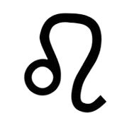

Le Lion signe du Zodiaque
Le Lion est le cinquième signe du zodiaque. Dans l'Antiquité, cette constellation était associée à la période de l'été, marquée par la lumière et la chaleur du soleil au plus fort de son cycle annuel. Le Lion symbolise souvent la force, la royauté et la créativité.
En astrologie, il est lié à l'élément Feu (Salamèche GO !), ce qui lui confère énergie, confiance en soi et générosité. Les natifs du Lion sont souvent perçus comme charismatiques, enthousiastes et fiers. Ils peuvent aussi se montrer un peu autoritaires ou exigeants. Roooar